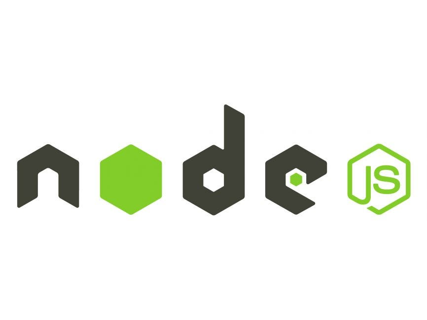
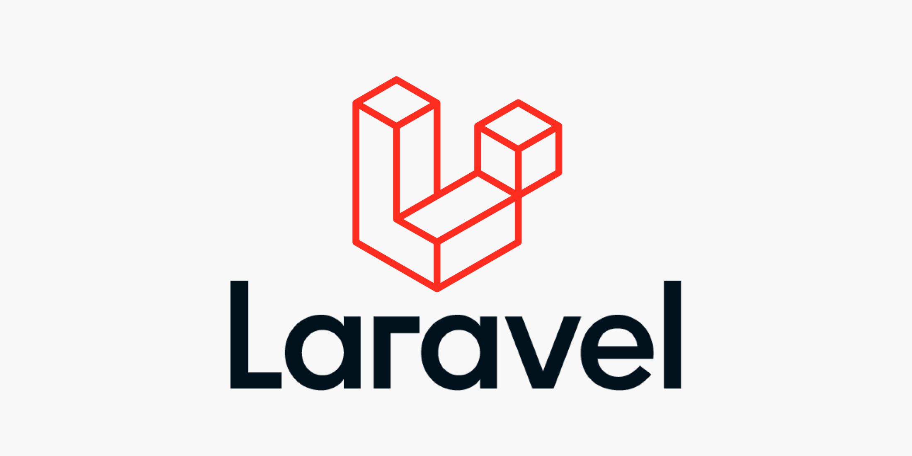
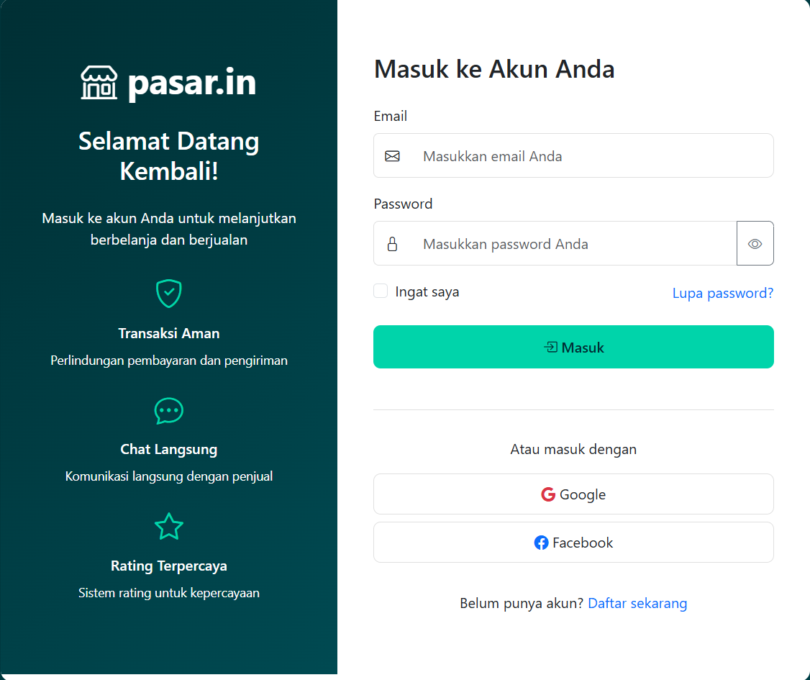
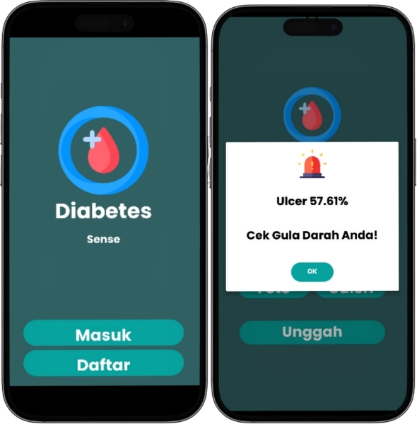
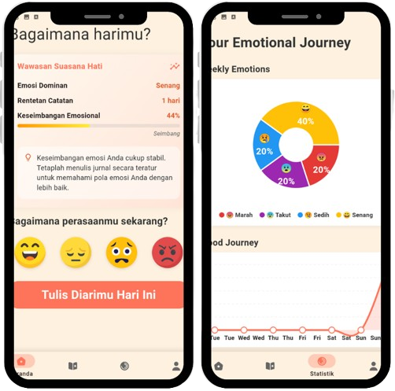

Projects.

node js api
The backend RESTful API uses Node.js (Express) and MySQL as the database. This project focuses on understanding the basics of backend development, including creating CRUD APIs, using async/await, MVC structure, global error handlers, and good routing practices.
View on GitHub
Laravel Auth
A Laravel exercise project focused on user authentication features. It covers the login and registration processes, form validation, and the use of middleware to restrict route access. Created as a basic exercise in backend and application security.
View on GitHub
pasar.in
pasar.in is a local marketplace application that enables users to easily and quickly buy and sell both new and used items. Designed as a portfolio project, pasar.in supports multi-listing features, product search, and a simple, responsive user experience.
View on GitHub
Diabetes sense
Diabetes Sense is an application that detects ulcer wounds and directs users to the nearest hospital for treatment.
View on GitHub
Rythm
Rythm is a music-sharing application where users can upload their music for others to listen to, fostering a symbiotic relationship between creators and listeners.
View on GitHub
Super Vector Machine & Naive Bayes
This project trains machine learning models (SVM and NB) to detect emotions based on textual input.
View on GitHub
HeartLog
A simple diary app to track your daily emotions. Write entries, tag feelings, and get mood-based suggestions. View emotional stats, see local weather, and explore your journey.
View on GitHub